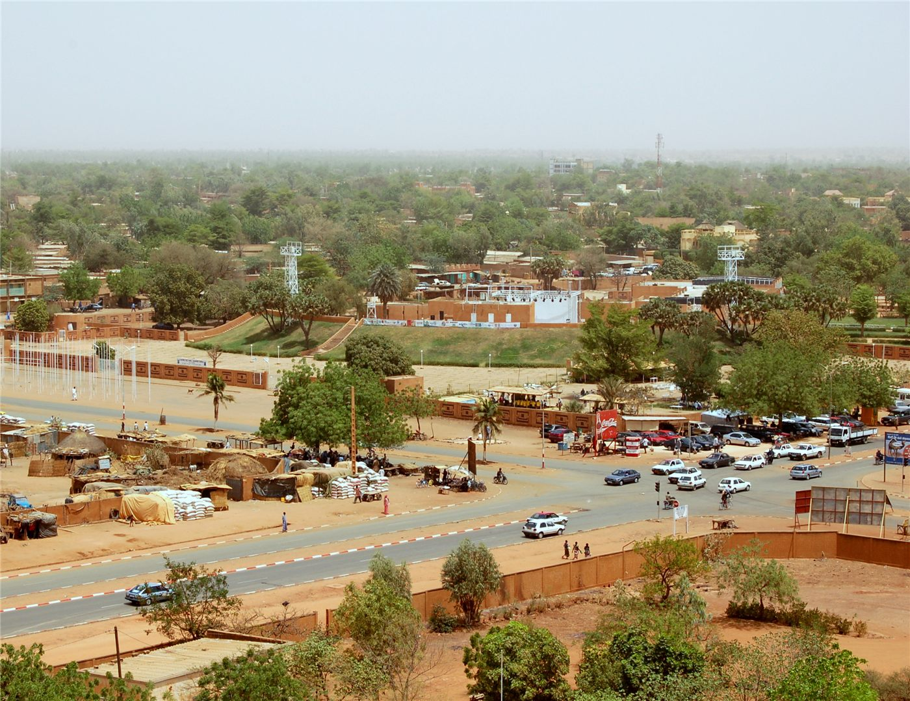

사헬 불안 지속… 니제르-나이지리아 국경서 무장세력 공격 증가
서아프리카 사헬 지역의 안보 위기가 이어지고 있다. 니제르-나이지리아 국경을 따라 이슬람국가(IS) 사헬지부 등의 공격이 늘고 있고, 말리·부르키나파소·니제르가 결성한 사헬국가동맹이 공동 대응을 모색한다. 나이지리아에서는 납치된 퇴역 장성이 숨지는 사건도 발생했다.
전홍발 기자 · 2026.06.16
橋국제

서아프리카 사헬 지역의 안보 불안이 계속되고 있다고 ACLED·크리티컬스레츠 등이 전했다. 니제르-나이지리아 국경 일대에서 IS 사헬지부(ISSP) 계열 무장세력의 공격이 증가하는 양상이다.
광고 문의 · 300×250말리·부르키나파소·니제르 세 나라는 2024년 '사헬국가동맹'을 결성했고, 2025년 초에는 지역 지하디즘에 맞설 5천 명 규모의 공동군 창설을 결정한 바 있다. 세 나라는 서방·역내 기구와 거리를 두며 독자적 안보 노선을 강화해 왔다.
민간인 피해도 누적되고 있다. 니제르 틸라베리 지역에서는 민간인을 겨냥한 폭력이 늘었고, 국경을 넘나드는 무장세력의 활동이 주민들의 일상을 위협한다.
나이지리아에서는 상징적인 사건이 발생했다. 카치나주에서 결혼식으로 향하던 중 부인과 함께 납치됐던 퇴역 소장 라베 아부바카르가 납치 2주 만에 억류 상태에서 숨졌다고 나이지리아군이 밝혔다.
사헬의 불안은 한 나라의 문제가 아니라 국경을 넘는 구조적 위기다. 동맹의 공동군이 실제 치안 회복으로 이어질지, 민간인 보호가 가능할지가 이 지역의 향방을 가를 전망이다.
출처·참고 (사실 확인용 — 본문은 직접 재작성)
· ACLED·Critical Threats 등 종합
· 로이터
· ACLED·Critical Threats 등 종합
· 로이터